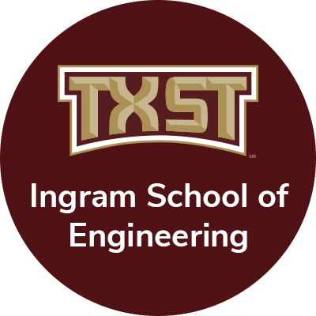

Education

Bachelor in Electrical Engineering, Concentration in Computer Engineering
Texas State University | San Marcos, Texas, United States · Minor in Applied Mathematics
Relevant Coursework
Texas State University · Undergraduate program
- Circuits I, II; Digital Logic; Microprocessors; Computer Architecture
- Linear Algebra; Differential Equations; Calculus I, II, III
- Digital Design using Hardware Description Language; Microelectronics; Signals and Systems
- Data Structures and Algorithms
Awards & Honors
Scholarships, competitions & recognition
-
Quantum Rising Star – QS3 Program, Rice University Ken Kennedy Institute
Selected to present quantum computing research and recognized as an emerging undergraduate researcher. Awarded travel support for poster presentation. -
Larry Whittington Endowment Award
Competitive award recognizing academic excellence and contributions to College of Science and Engineering at Texas State University. -
U.N. and Praja Pandey Endowed Electrical Engineering Scholarship
From late Dr. Raghavendra Pandey's Family towards exceptional academic performance and leadership in electrical engineering. -
Brian Wong Endowed Electrical Engineering Scholarship
From Mr. Brian Wong towards exceptional academic performance and leadership in Electrical Engineering. -
Texas State Merit Scholarship
Awarded the Texas State Merit Scholarship covering Tuition, recognizing academic achievement, leadership, and research engagement at the time of admission. -
3rd Place – Texas State Datathon
Completed a data analysis project examining 20,000+ student reviews to identify systemic biases in teaching evaluations using Python-based statistical analysis. -
President’s List & Dean’s List
Maintained a semester GPA of 4.0 across all semesters, earning recognition on the President’s List and Dean’s List for academic excellence. -
United Nations Office for Outer Space Affairs Recognition
Selected as a scholar and invited to participate in a fully funded academic program in Vienna, Austria focused on space science and international collaboration.